k-Day 039｜人車合一
早上五點又醒了，縮在睡袋裡，腦中流過這幾天遇見的人和對話。看了幾天遼代的寺廟古蹟，突然意識到這些對話如果在一千年前會是這樣的：
義縣人民政府招待所管理員大叔和櫃檯妹妹：
「騎馬來噠？」
「從哪兒騎過來噠？」
「日本？」「你就特地騎過來看大佛寺？」
「走啦？」「接下來往哪兒啊？」
「這天冷你穿得少了。」「騎馬會熱啊？」
山裡正在修馬車的大哥：
「哪兒來噠？」「騎了三十多天？」
「去法國？就你一個人啊？你該組個隊。」
「現在往哪個方向啊？」「朝陽？過了這山就是朝陽管的，你從這下坡就到朝陽界了。」
山腳河邊的居民:
「你從哪騎過來的？」
「你從這大山過來的？哎呦，真厲害。」「迷路啦？朝陽今天不能到。你往北票，不進北票，到大板，那裡有住的。明天再去朝陽。」
大板鎮涼亭聊天的阿姨:
「你這一路去法國經過有戰爭的國家怎麼辦啊？」「是啊，有戰爭的地方就別去。」
「看那些人民現在過的。我們這裡很太平，別打仗，過得太平就好了。」
超商採買大哥:
「你就是從日本來噠？」
「這馬是日本買噠？這一匹多少錢？」
「就睡在那河邊？這天氣會冷吧？」
「抽菸嗎？我這是雲南煙。」
「你說我倆怎麼加個聯繫方式？我倆還真是有緣啊！」
捷安特老闆：
「我把你這馬蹄換好了，馬鞍也調好了，你要是覺得鬆就這樣往左邊擰一圈。你這扣兒是荷蘭扣吧，你等會兒我幫你找找，它要是斷了你就這樣把這個扣上去。」
「祝你一路順風啊。」
烤肉店老闆：
「吃點啥呢？」
「牛肉？」「肥的瘦的？」「主食呢？炒飯？冷面吃不吃？」
「吃飽了？」「今天不走了？」
「我幫你把水袋裝滿吧。」
千年後對話還是這樣，只是坐騎換成了自行車。這地方一直都是這樣送往迎來的吧，可以是漢人的故鄉、鮮卑人的重鎮、契丹人的大遼國起源地，最後大家就混成了同一種文化交融彼此認同的住民。
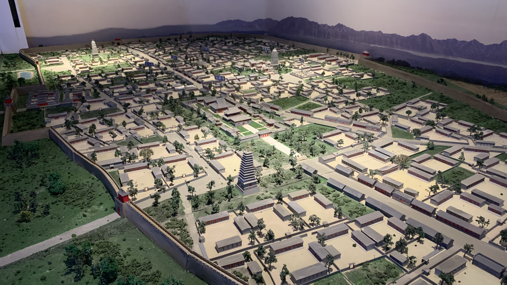
博物館開門後準時到場參觀，跟著導覽員走，想獲得一些額外資訊。得知原本朝陽有三個塔，東塔毀壞後，契丹人並沒有原地重建，而是重修了北塔，另外蓋了一座與北塔相對的南塔。詢問原因，導覽員也不知道。
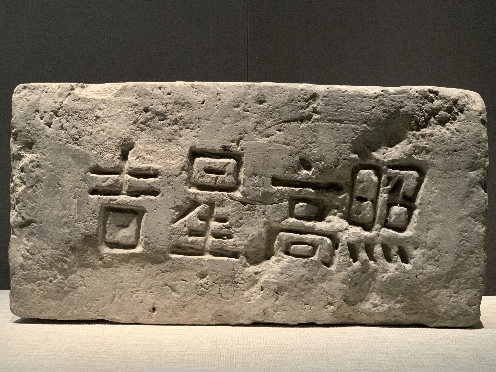
館內藏品大多是從地宮蒐集到的佛舍利石棺、木盒、鎏金外塔，塔上的石磚與瓦片上還刻有當時參與建造的人們留下的簽名、題字等。大部分寫的是漢字。
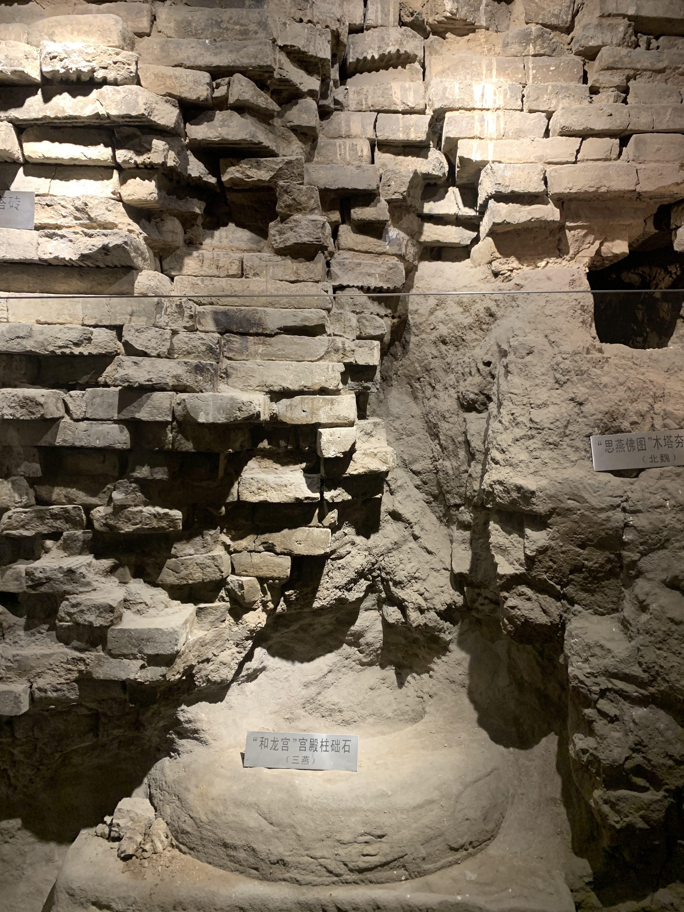
買全票可以進入北塔地基，看到前燕、北魏和遼代一層一層堆疊的痕跡。
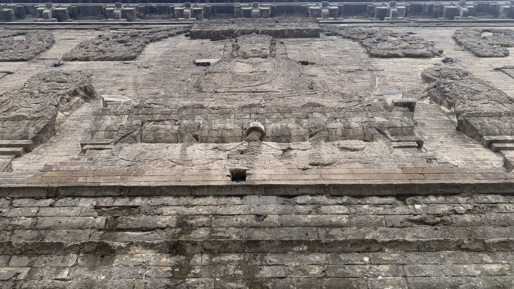
從地宮上塔，近距離參觀塔上的雕刻。
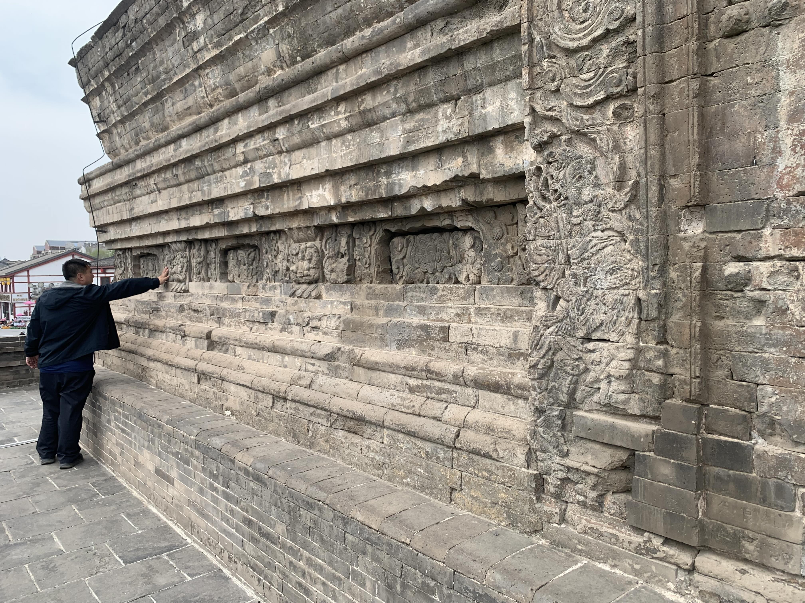
又看到一位大叔把手按在石磚上。在奉國寺時相當反感，現在反而相當好奇，究竟這種觸摸儀式是怎樣流傳下來的。
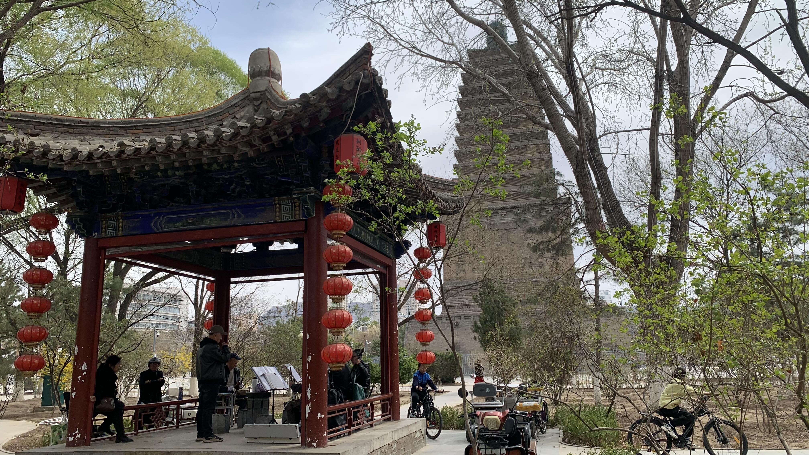
參觀時間比預計的久，中午才到零食舖採買午餐和接下來幾天的零食。坐在北塔下的廣場聽戲。兩個戲台，一文一武，兩台戲同時上演。突然覺得這樣的文化也不錯。
也許所謂精神並不一定要像在鳥居前鞠躬的日本人一樣，台灣的廟口夜市大概也是這類把古蹟佛寺當成日常集散地的傳統。
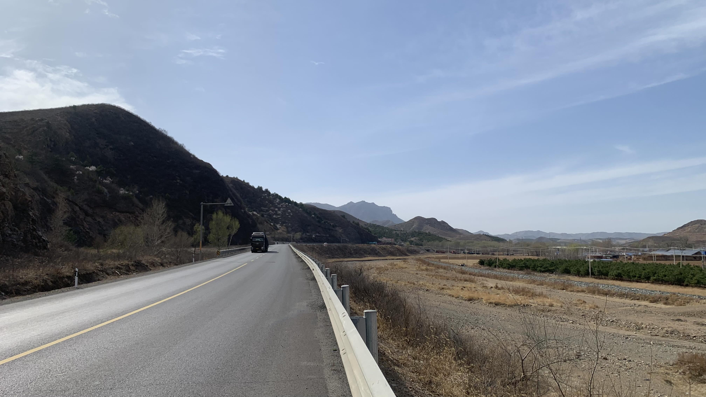
下午一點出發，天氣很熱，沒多久就脫下防水外套，換上藍色風衣。
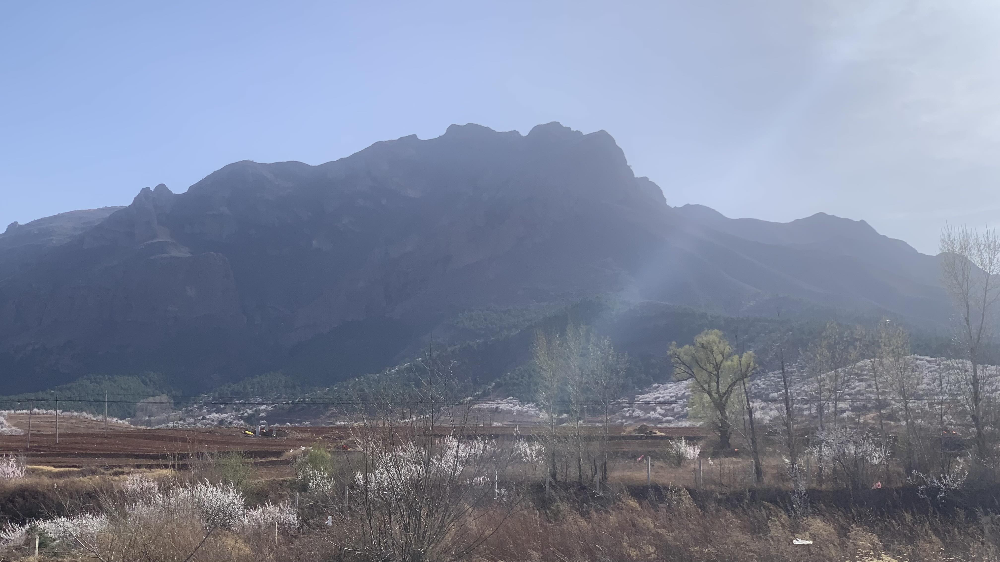
抬頭看見眼前這座山上的紋路不斷朝著中心集中蠕動著，難道是熱得產生幻覺了嗎？
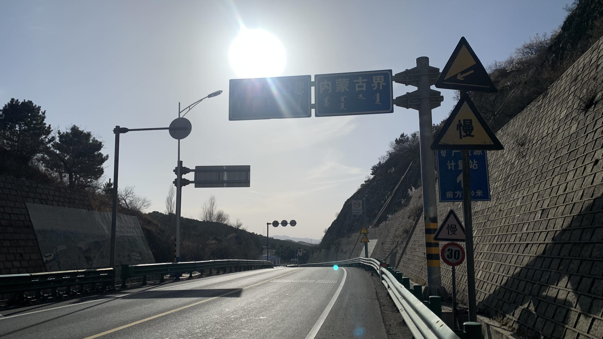
在豔陽之下爬上內蒙邊界，往後的日子會一路上升，爬上高原。
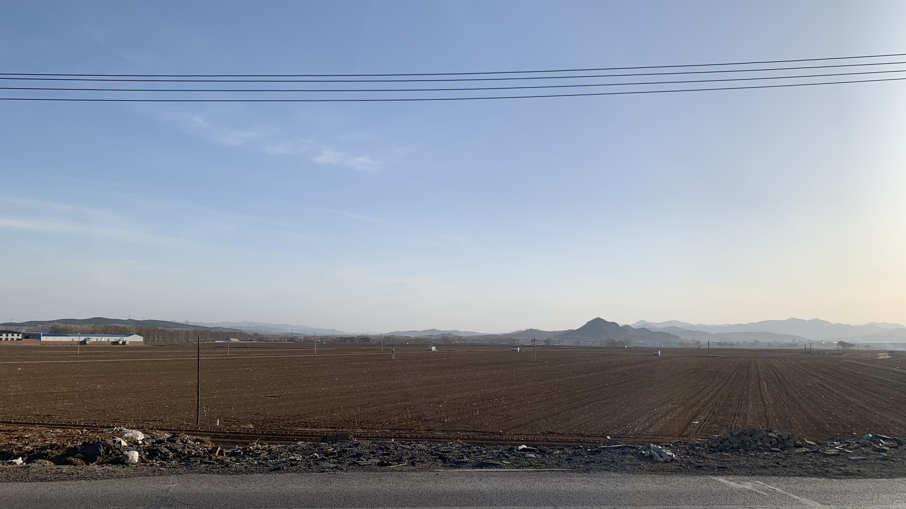
越往北騎，山就離得越來越遠，只有國道一路延伸。
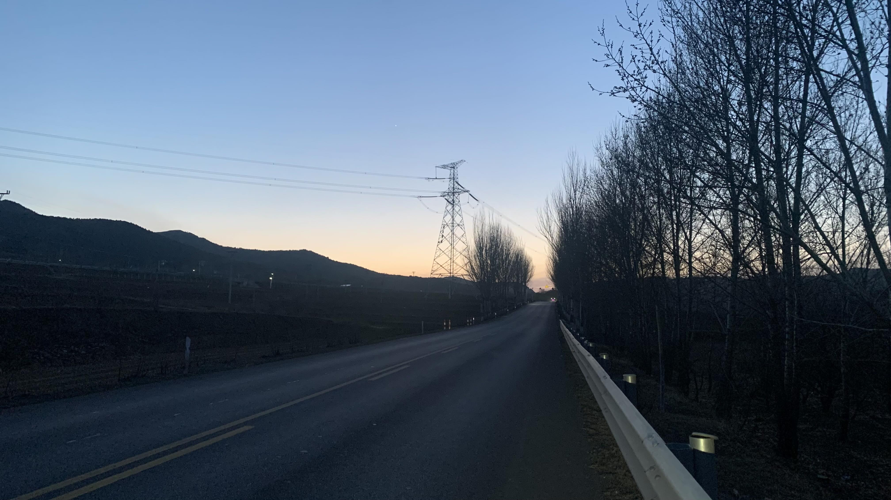
太陽下山了，怎麼還在山區國道上，相當尷尬的時間，要到下一個城鎮還得幾個小時。
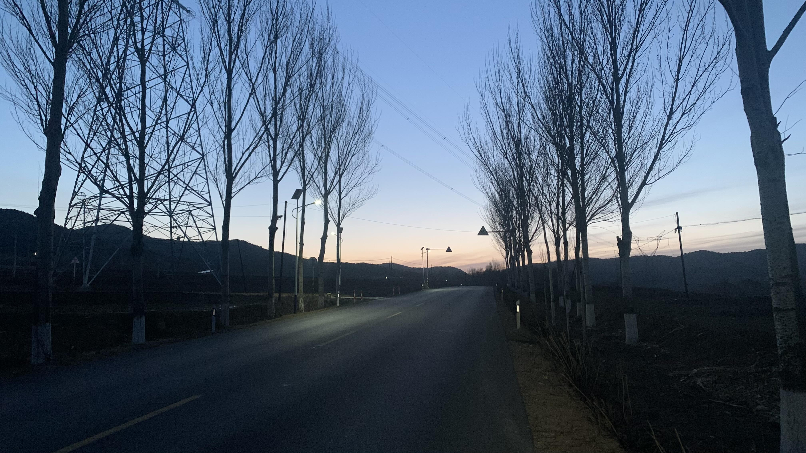
看來今天是趕夜路的節奏，打開前後車燈，按下安全帽上的呼吸燈，背上裝了閃爍尾燈的背包，確保整個國道上的卡車都能看見我。
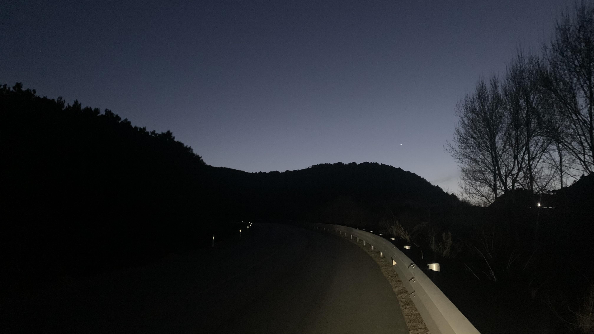
晚上七點後天已經全暗了。山路上的國道依然只有國道，護欄外就是山壁和山坡。腎上腺素爆發似的握住把手，踩著踏板，全身發熱。心裡想著必須盡快離開這些國道卡車，決不能讓速度慢下來。
一路上腦中重複著在台灣治療時，黃老師的聲音：「中心收緊，其實就是重心轉換，髖部畫圓，很簡單。往下踩，有感覺到屁股出力嗎？」
將近晚上八點，抬頭一看，上方的天空離我好近啊。感覺到身體已經沒有力氣時，似乎又從哪裡出現了力量，這力量並不屬於我本人，髖部的圓和膝蓋、腳踝、踏板的方向達成一致，這就是人車合一的境界。
出乎意料地，兩個半小時的時間，所有卡車靠近我時都主動放慢速度，除了少數幾輛按了警告性質的短聲喇叭，其他司機皆安靜的駛過。所有人安靜地趕路，在狹窄的彎道和陡坡會車時，兩邊的大卡車會先減速，等另一邊的車子走遠才繞過我。
終於在八點二十左右，上上下下的爬坡似乎結束了，路邊也開始有了路燈，是進入城鎮的跡象。
看到霓虹燈裝飾的餐廳時，心裡不斷歡呼著。
這次沒有直接尋找旅店，而是滑進一間生鮮超市，買了兩瓶水，結帳時問老闆：「這邊有便宜的住宿嗎？」
老闆讓我坐著休息，一邊聊天一邊幫我聯繫周邊兼做民宿的朋友還有沒有房。
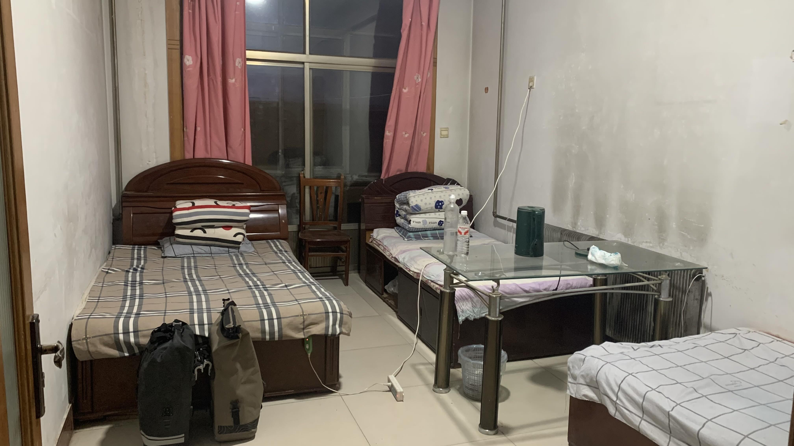
約莫九點，跟著老闆的車抵達一間餐廳，樓上改作客房，三人房的床位一晚二十元。
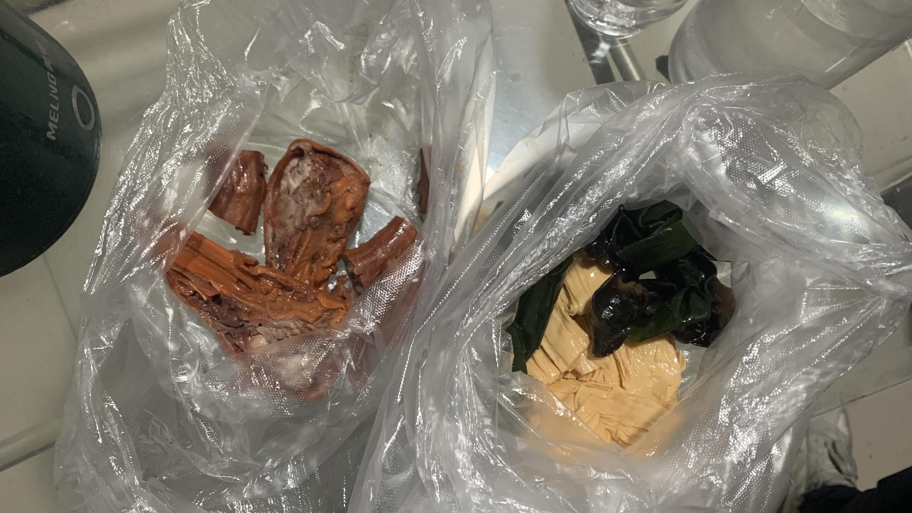
氣溫降的很快，趕緊把濕透的衣服換上，跟老闆買了樓下餐廳的鴨頭和素菜。
今天相當優秀，朝陽老闆修好的變速滑順無比，我和二十三號同時升級，成為共同體。
今日花費： 糧草補給 70、博物館門票 50、飲料 10、住宿+晚餐 37元